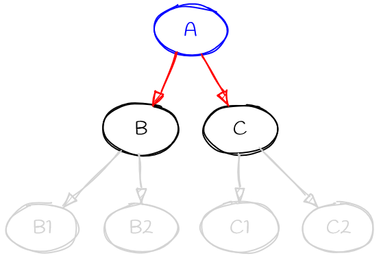

More on Dependency Resolution¶
This article goes into more detail about pip’s dependency resolution algorithm. In certain situations, pip can take a long time to determine what to install, and this article is intended to help readers understand what is happening “behind the scenes” during that process.
Note
This document is a work in progress. The details included are accurate (at the time of writing), but there is additional information, in particular around pip’s interface with resolvelib, which has not yet been included.
Contributions to improve this document are welcome.
The dependency resolution problem¶
The process of finding a set of packages to install, given a set of dependencies between them, is known to be an NP-hard problem. What this means in practice is roughly that the process scales extremely badly as the size of the problem increases. So when you have a lot of dependencies, working out what to install will, in the worst case, take a very long time.
The practical implication of that is that there will always be some situations where pip cannot determine what to install in a reasonable length of time. We make every effort to ensure that such situations happen rarely, but eliminating them altogether isn’t even theoretically possible. We’ll discuss what options you have if you hit a problem situation like this a little later.
Python specific issues¶
Many algorithms for handling dependency resolution assume that you know the full details of the problem at the start - that is, you know all of the dependencies up front. Unfortunately, that is not the case for Python packages. With the current package index structure, dependency metadata is only available by downloading the package file, and extracting the data from it. And in the case of source distributions, the situation is even worse as the project must be built after being downloaded in order to determine the dependencies.
Work is ongoing to try to make metadata more readily available at lower cost, but at the time of writing, this has not been completed.
As downloading projects is a costly operation, pip cannot pre-compute the full dependency tree. This means that we are unable to use a number of techniques for solving the dependency resolution problem. In practice, we have to use a backtracking algorithm.
Dependency metadata¶
It is worth discussing precisely what metadata is needed in order to drive the package resolution process. There are essentially three key pieces of information:
The project name
The release version
The dependencies themselves
There are other pieces of data (e.g., extras, python version restrictions, wheel compatibility tags) which are used as well, but they do not fundamentally alter the process, so we will ignore them here.
The most important information is the project name and version. Those two pieces of information identify an individual “candidate” for installation, and must uniquely identify such a candidate. Name and version must be available from the moment the candidate object is created. This is not an issue for distribution files (sdists and wheels) as that data is available from the filename, but for unpackaged source trees, pip needs to call the build backend to ask for that data. This is done before resolution proper starts.
The dependency data is not requested in advance (as noted above, doing so would be prohibitively costly, and for a backtracking algorithm it isn’t needed). Instead, pip requests dependency data “on demand”, as the algorithm starts to check that particular candidate.
One particular implication of the lazy fetching of dependency data is that often, pip does not know things that might be obvious to a human looking at the dependency tree as a whole. For example, if package A depends on version 1.0 of package B, it’s obvious to a human that there’s no point in looking at other versions of package B. But if pip starts looking at B before it has considered A, it doesn’t have access to A’s dependency data, and so has no way of knowing that looking at other versions of B is wasted work. And worse still, pip cannot even know that there’s vital information in A’s dependencies.
This latter point is a common theme with many cases where pip takes a long time to complete a resolution - there’s information pip doesn’t know at the point where it makes a “wrong” choice. Most of the heuristics added to the resolver to guide the algorithm are designed to guess correctly in the face of that lack of knowledge.
The resolver and the finder¶
So far, we have been talking about the “resolver” as a single entity. While that is mostly true, the process of getting package data from an index is handled by another component of pip, the “finder”. The finder is responsible for feeding candidates to the resolver, and has a key role to play in selecting suitable candidates.
Note that the resolver is only relevant for packages fetched from an index. Candidates coming from other sources (local source directories, direct URL references) do not go through the finder, and are merged with the candidates provided by the finder as part of the resolver’s “provider” implementation.
As well as determining what versions exist in the index for a given project, the finder selects the best distribution file to use for that candidate. This may be a wheel or a source distribution, and precisely what is selected is controlled by wheel compatibility tags, pip’s options (whether to prefer binary or source) and metadata supplied by the index. In particular, if a file is marked as only being for specific Python versions, the file will be ignored by the finder (and the resolver may never even see that version).
The finder also provides candidates for a project to the resolver in order of preference - the provider implements the rule that later versions are preferred over older versions, for example.
The resolver algorithm¶
The resolver itself is based on a separate package, resolvelib. This implements an abstract backtracking resolution algorithm, in a way that is independent of the specifics of Python packages - those specifics are abstracted away by pip before calling the resolver.
Pip’s interface to resolvelib is in the form of a “provider”, which is the interface between pip’s model of packages and the resolution algorithm. The provider deals in “candidates” and “requirements” and implements the following operations:
identify- implements identity for candidates and requirements. It is this operation that implements the rule that candidates are identified by their name and version, for example.get_preference- this provides information to the resolver to help it choose which requirement to look at “next” when working through the resolution process.narrow_requirement_selection- this provides a way to limit the number of identifiers passed toget_preference.find_matches- given a set of constraints, determine what candidates exist that satisfy them. This is essentially where the finder interacts with the resolver.is_satisfied_by- checks if a candidate satisfies a requirement. This is basically the implementation of what a requirement means.get_dependencies- get the dependency metadata for a candidate. This is the implementation of the process of getting and reading package metadata.
Of these methods, the only non-trivial ones are the get_preference and
narrow_requirement_selection methods. These implement heuristics used
to guide the resolution, telling it which requirement to try to satisfy next.
It’s these methods that are responsible for trying to guess which route through
the dependency tree will be most productive. As noted above, it’s doing this
with limited information. See the following diagram:

When the provider is asked to choose between the red requirements (A->B and A->C) it doesn’t know anything about the dependencies of B or C (i.e., the grey parts of the graph).
Pip’s current implementation of the provider implements
narrow_requirement_selection as follows:
If Requires-Python is present only consider that
If there are causes of resolution conflict (backtrack causes) then only consider them until there are no longer any resolution conflicts
Pip’s current implementation of the provider implements get_preference
for known requirements with the following preferences in the following order:
Any requirement that is “direct”, e.g., points to an explicit URL.
Any requirement that is “pinned”, i.e., contains the operator
===or==without a wildcard.Any requirement that imposes an upper version limit, i.e., contains the operator
<,<=,~=, or==with a wildcard. Because pip prioritizes the latest version, preferring explicit upper bounds can rule out infeasible candidates sooner. This does not imply that upper bounds are good practice; they can make dependency management and resolution harder.Order user-specified requirements as they are specified, placing other requirements afterward.
Any “non-free” requirement, i.e., one that contains at least one operator, such as
>=or!=.Alphabetical order for consistency (aids debuggability).